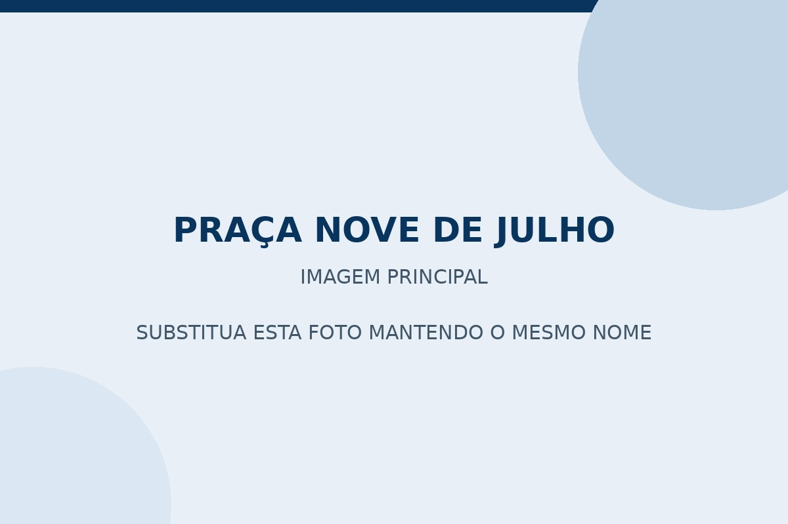

Praça Nove de Julho
Um dos espaços mais tradicionais do centro de Presidente Prudente, cercado por construções históricas, comércio e serviços. É um ponto agradável para conhecer parte da história e do cotidiano da cidade.
Ver no Google Maps